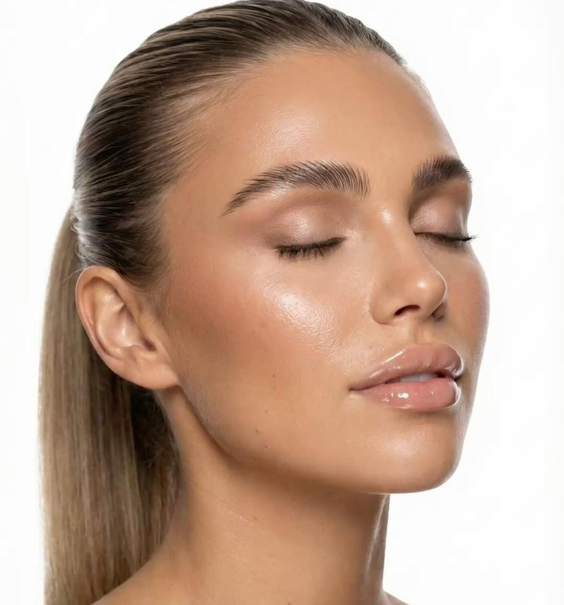

Support pédagogique
Manuel
de formation
Sourcils·Cils·Pratique professionnelle·Évaluation
Beauté du regard
01
Au programme de cette partie
??Anatomie et cycle de vie du poil
03Pourquoi les sourcils tombent-ils ?
??Restructuration et mapping
??Brow Lift : technique et temps de pose
??Teinture hybride
??Décoloration
??Atelier visuel Brow Lift
??Hygiène, sécurité et qualité
Dolce Lash & Brow · Support pédagogiquePartie I — Sourcils
Anatomie du poil
Pourquoi les sourcils tombent-ils ?
Distinguer renouvellement normal, casse et chute anormale
i.
Chute physiologique
Un sourcil arrivé en fin de cycle peut tomber : c’est le renouvellement naturel. La perte isolée de quelques poils n’indique pas forcément un problème. Les follicules ne sont pas synchronisés, ce qui permet de conserver une ligne visible.
ii.
Casse ou fragilisation
Les frottements répétés, l’épilation excessive, les traitements chimiques mal adaptés et une manipulation agressive peuvent casser les poils ou fragiliser la zone. Un poil cassé n’est pas nécessairement un poil tombé avec sa racine.
iii.
Chute inhabituelle
Une perte en plaques, rapide, persistante ou associée à rougeur, démangeaisons, squames ou douleur mérite un avis médical. Parmi les causes possibles : affection dermatologique, alopécie, troubles thyroïdiens, carences ou certains traitements. Une technicienne esthétique ne pose pas de diagnostic médical.
En pratique, avant une prestation :
- Observer la densité, les zones clairsemées, l’état de la peau et la résistance apparente du poil.
- Questionner sans juger sur les épilations et soins récents.
- Reporter tout traitement chimique sur une zone irritée ou lorsque l’état des poils paraît préoccupant.
Dolce Lash & Brow • Manuel de formation
Dolce Lash & Brow · Support pédagogiquePartie II — Les cils
Avant tout
5.Diagnostic avant rehaussement
Observer les cils, leur état et les éventuelles contre-indications. Vérifier l’absence d’irritation ou d’infection oculaire, effectuer les contrôles prévus par les notices et choisir les pads adaptés.
Préparation
Nettoyer les cils, protéger les cils inférieurs, positionner le pad en silicone et aligner soigneusement les cils.
6.Rehaussement de cils — Noemi Innovate
Ordre des étapes enseigné
| Étape | Produit | Temps de pose |
|---|
| Step 1 | Noemi Innovate — Step 1 | 10 minutes |
| Step 1.5 | Noemi Intense — Lash Botox (soin cils et sourcils) | Selon notice du soin |
| Step 2 | Noemi Innovate — Step 2 | 10 minutes |
Important
Ces temps de 10 minutes correspondent au protocole demandé pour la formation et doivent être confirmés sur les notices Noemi Innovate du lot utilisé. Vérifier expressément auprès du fabricant que le soin Intense peut être appliqué entre Step 1 et Step 2 : certains systèmes imposent de neutraliser avant tout soin. Ne pas appliquer cette séquence sans validation.
Dolce Lash & Brow • Manuel de formation